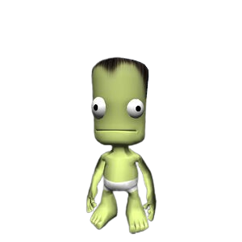
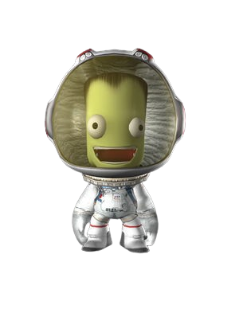

Astros
O jogador administra um programa espacial operado por Kerbals, uma
espécie de pequenos humanóides verdes, que construíram um espaço-
porto em seu planeta natal, Kerbin. A partir do centro espacial, os
jogadores podem construir vários veículos, como foguetes,
aeronaves, aviões espaciais e veículos espaciais, a partir de um
conjunto fornecido de componentes.
As naves construídas podem ser lançadas da plataforma de lançamento
ou pista do centro espacial para realizar várias tarefas, evitando
falhas parciais ou catastróficas (como falta de combustível ou
falha estrutural). Os jogadores controlam o vôo com pouca
assistência além de um Sistema de Assistência à Estabilidade (SAS)
para manter seu veículo orientado.
Desde que mantenha impulso e combustível suficientes, uma
espaçonave pode entrar em órbita ao redor de Kerbin ou viajar para
outros corpos celestes. Para visualizar as trajetórias dos
veículos, o jogador recebe um 'mapa' que mostra a trajetória do
veículo, bem como a dos corpos celestes e outras naves espaciais,
bem como os seus parâmetros orbitais.
Os 'nós' de manobra da nave espacial podem ser traçados,
cronometrados e executados, e os objetos podem ser selecionados e
'direcionados' para facilitar sobrevoos, encontros e atracação.
As missões (definidas pelo jogador ou "contratos" atribuídos)
envolvem objetivos como atingir uma certa altitude, escapar da
atmosfera, alcançar uma órbita estável, pousar em um determinado
corpo planetário, resgatar astronautas presos, capturar asteróides
e criar espaço estações e bases de superfície. Os jogadores também
podem definir desafios uns para os outros nos fóruns do jogo, como
pousar em todas as cinco luas do gigante gasoso Jool, ou usar mods
para testar as aeronaves uns dos outros em torneios de combate
aéreo.
Os jogadores podem controlar os astronautas Kerbal no jogo, que
podem sair da espaçonave em atividades extraveiculares (EVAs).
Enquanto estão em EVA, Kerbals podem usar seu traje EVA para
manobrar no espaço, semelhante ao uso da Unidade de Manobra
Tripulada da NASA. Kerbals em EVA podem coletar e armazenar
experimentos científicos, plantar bandeiras nas superfícies de
planetas e luas e consertar naves espaciais.
Missões espaciais históricas podem ser implementadas e realizadas
no jogo, como o pouso da Apollo na Lua, o rover Curiosity e a
Estação Espacial Internacional. Certas partes do jogo são baseadas
em hardware da vida real, como o Probodobodyne Stayputnik (um
análogo do Sputnik 1), o Mk1-3 Command Pod (Apollo CM) e o KS-25
'Vector' (RS-25).
Vários mods desenvolvidos pela comunidade podem adicionar recursos
como peças adicionais, exibições informativas detalhando
características orbitais e funcionalidades de piloto automático.
Alguns mods foram incorporados ao jogo principal devido à
popularidade. Por exemplo, a mineração de recursos, para
transformar minério para refino em combustível, foi implementada a
partir de um mod popular.